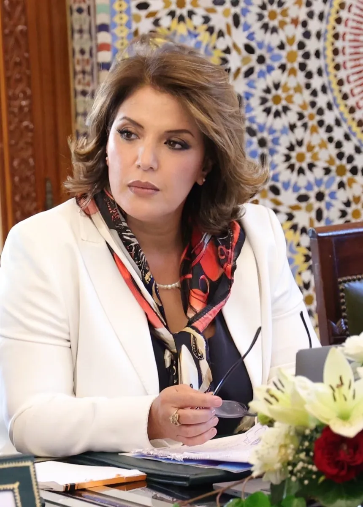

خديجة الكور
باحثة في علم الاجتماع والإعلام
فاعلة سياسية ومدنية
رئيسة منظمة النساء الحركيات
لا تستعيد السياسة شرعيتها إلا حين تعود إلى جوهرها: شرح القرارات، ومساءلة الخيارات، وتقديم الحسابات.

من هي
بين البحث والإعلام والسياسة
أستاذة باحثة في علم الاجتماع، حاصلة على الدكتوراه من جامعة باريس السابعة، وفاعلة سياسية ومدنية مغربية. تجمع في مسارها بين العمق الأكاديمي والانخراط السياسي والعمل الميداني.
عملت مفتشة عامة لوزارة الثقافة، ثم عضوة في المجلس الأعلى للاتصال السمعي البصري، وتترأس منذ نونبر 2023 منظمة النساء الحركيات.
المسار الكامل ←التغيير الحقيقي لا يُصنع في قاعات القرار وحدها، بل يُبنى يوماً بيوم في الميدان.
الرؤية
من أجل مغرب يستحقه أبناؤه
إنصاف النساء
إدماج فعلي للمرأة في مراكز القرار وصنع السياسات.
اقرأ المزيد ← 02أفق للشباب
وطن يجد فيه الشباب المعنى والفرصة والمستقبل.
اقرأ المزيد ← 03هوية متعددة
ثروة حضارية تميّز المغرب وتجعل منه نموذجاً للتعايش.
اقرأ المزيد ← 04عدالة اجتماعية
محاربة الفقر والأمية والهشاشة بإرادة سياسية حقيقية.
اقرأ المزيد ← 05ثورة المعرفة
إعداد أبناء المغرب لعالم رقمي متحول.
اقرأ المزيد ← 06مغرب في العالم
قوة إقليمية صاعدة، شريك لا تابع.
اقرأ المزيد ←أحمل حلم مغرب يُنصف نساءه، لا بمنطق الكوطا والمقاعد المحجوزة، بل بإدماج فعلي للمرأة في مراكز القرار.
صوت وصورة
حضور إعلامي وطني
قلم وموقف
قلم في خدمة القضايا
مقالات رأي منتظمة في الصحافة الوطنية والعربية حول الديمقراطية والحكامة وحقوق المرأة والشباب والهوية.
كل المقالاتتواصل وصحافة
للصحفيين والمنظمين
لطلبات المقابلات والمشاركة في الندوات والبرامج، أو للحصول على صور رسمية وسيرة مختصرة.